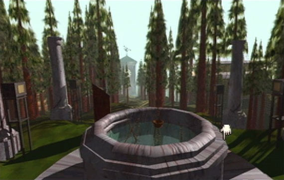
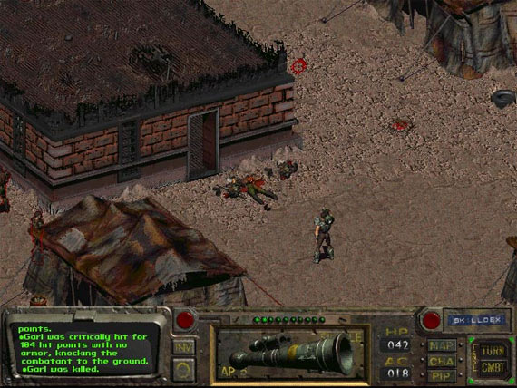

Vilain Game Designer ! Pas de biscuit pour toi ! VII
L'article original est écrit par Ernest Adams publié par Gamasutra (juin 2006).
L'auteur original n'est en aucun cas reponsable de la précision de cette traduction.
Nous savons tous que l'industrie du jeu vidéo souffre d'un important turn over: des débutants enthousiastes rentrent dans le monde du business ; les conditions de travail et les longues heures les poussent à bout ; ils finissent par démissionner pour trouver une occupation plus saine et de nouvelles recrues arrivent, toutes prêtes à se faire exploiter à leur place. Mis à part la vie et le talent gâchés que cela représente, ceci signifie que les studios de jeux vidéo n'ont pas de mémoire institutionnelle, et c'est en partie pour ça que nous continuons à faire des erreurs de conceptions.
D'un autre côté, ça me donne de quoi écrire quelque chose chaque année ! Je vous présente Vilain Game Designer ! Pas de biscuit pour toi ! VII. Cette liste de TDC annuelle [NDT : Twinkie Denial Condition, littéralement, condition pour refuser un biscuit, à savoir à un mauvais game designer)] est, malheureusement, longue, et comme d'habitude, m'a été envoyée par vous, mes fidèles lecteurs. Si vous voulez m'en envoyer un peu plus, écrivez à notwinkie@designersnotebook.com [NDT : en anglais]. En attendant, c'est parti.
Pas de nouvelles fonctionnalités après les premiers niveaux
Le renouvellement est l'un des nombreux aspects qui rend un jeu vidéo amusant et l'une des qualité qui sépare ce genre des jeux de société, par exemple. Mahdi Jeddi écrit pour se plaindre des jeux qui présentent toutes leurs fonctionnalités dans les premiers niveaux, mais qui ensuite n'offrent rien de nouveau dans les dernières étapes du jeu. Il nous dit :
S'ils ont un budget limité, ils peuvent répartir la présentation des nouvelles fonctionnalités dans chaque niveau, et peut-être faire quelques niveaux spéciaux pour les présenter. De cette manière, le jeu conservera sa fraîcheur jusqu'à la fin et le joueur sera sauvé de l'ennui.
Oyez ! Oyez ! Quel est le pire : un jeu qui présente ses fonctionnalités petit à petit mais régulièrement ou un jeu qui les présente toutes d'un coup et qui n'en donne plus du tout ensuite ? Je préférerais beaucoup jouer au premier. Évidemment, cela dépend du genre, mais offrir un peu de neuf de temps à autre aide sans aucun doute à maintenir l'intérêt du joueur. Trop de jeux finissent par devenir lassants à mourir dans leur dernier tiers voire plus et le joueur doit faire un effort considérable s'il veut voir la fin. On ne fait pas ce métier pour créer des choses ennuyeuses à mourir.
Changement radical des règles contre le boss de fin
Les boss nécessitent toujours une approche différente des ennemis ordinaires — c'est une convention bien connue des jeux vidéo, et nous le savons tous. Mais quand les changements sont si grands qu'ils rendent l'expérience antérieure inutile, le jeu est injuste envers le joueur. David Peterson écrit :
Dead or Alive 3 change complètement les règles au moment du combat contre le boss final et rend caduc tout ce que vous avez appris auparavant. Quand vous jouez au mode Histoire, vous combattez un tas de personnages différents au cours du jeu. À la fin, vous affrontez le « big boss » (je ne sais toujours pas qui il est ni pourquoi il est entouré de flammes) et tout change. Il vous tire dessus ; la caméra est verrouillée dans une position complètement différente du reste du jeu, qui décale tous les combinaisons que vous avez l'habitude d'utiliser d'un quart de tour sur la manette et le jeu finit par se réduire à « Bouge un peu, bloque, bouge un peu, etc. » Tous les mouvements et les compétences que vous aviez appris ne servent plus à rien maintenant. Argh !!!
Yep, clairement une TDC. Les combats contre des boss devrait se baser sur ce que le joueur à appris et non repartir de zéro.
Mauvaise traduction
Santiago Hodalgo nous écrit d'Espagne pour souligner à quel point une mauvaise traduction peut tuer tout le fun d'un jeu. Je lui cède la parole :
Avant, seul un petit nombre de jeux étaient traduit en espagnol, principalement les jeux d'aventures et c'étaient sans doute les seuls correctement traduits. Je me souviens particulièrement des jeux Lucasarts parce qu'ils avaient de bonnes traductions, et les blagues américaines avaient même été adaptées pour le jeu en espagnol… Aujourd'hui, avec des jeux plus complexes et un contenu multimédia riche, je pense que le travail de traduction et de localisation est devenue une tâche plus importante, et alors que certains jeux sont correctement traduits, beaucoup d'autres ne le sont pas.
J'ai joué à Call of Duty en anglais pour la première fois, et les voix ajoutaient au réalisme, mais dans la version espagnole la traduction était extrêmement pauvre. Dans la version originale, les officiers criaient des ordres, insistaient sur certains points ; la voix des soldats paniqués reflétait leur peur ; les civils cachés vous interpellaient à voix basse et on distinguait même des accents différents selon la nationalité des personnages. Dans la version espagnole, il n'y a pas la moindre intonation de voix, c'est juste de la lecture. C'est le même timbre de voix pour chaque ligne de dialogue, peu importe la situation ou l'endroit."
Quoi qu'il en soit, Call of Duty est un jeu génial, alors qu'est-ce qui ne va pas ici ? Qui, chez Activision, a une estime assez basse de son travail pour bâcler d'une telle façon la traduction ? Le marché hispanophone n'aurait-il pas droit à une aussi bonne qualité de production que le marché anglophone (vue la taille du marché hispanophone rien qu'aux États-Unis, la personne en question ferait bien de vite se ressaisir) ? Vilain Game Designer ! Pas de biscuit pour toi ! [NDT : les joueurs français comprennent sans aucun doute très bien le problème, quand on pense à des traductions comme celle — « mémorable » — de Final Fantasy VII]
Pas de sous-titres
Et puisque nous évoquons le problème de la langue, Mihail Mercuryev écrit d'Ukraine pour nous dire :
Les sous-titres rendent le jeu accessible aux personnes étrangères et aux personnes qui sont forcées de jouer sans le son. Mais de nombreux jeux connus (Myst, Uru et Outcast par exemple) n'en ont pas. En outre, la plupart des dialogues dans Myst sont tellement bruités que c'est à peine compréhensible, même pour quelqu'un dont c'est la langue maternelle. Dans Commandos, quand vous n'avez pas de son, le briefing de la mission ne sert plus à rien, il y a juste la carte qui défile d'un côté ou de l'autre. Pour une raison inconnue, le jeu Driver refusait de diffuser certains sons sur mon ordinateur, je n'ai donc pas pu écouter certains messages… et pas de sous-titres pour compenser, évidemment.

Je pense que tous les messages vocaux doivent être renforcés par des sous-titres ou un autre système visuel. Si vous pensez que l'utilisation de sous-titres ruine le gameplay, désactivez-les par défaut. Dans certains cas, quand vous traduisez le jeu dans une autre langue, on peut se contenter simplement d'afficher les sous-titres sans toucher aux voix. Par exemple, ce genre de traduction a bien fonctionné dans Desperados ; si les voix étaient doublées en russe, les personnages perdraient leurs charmants accents.
Je ne suis pas d'accord avec la dernière phrase — ils ne perdraient pas nécessairement leurs accents si les acteurs avaient fait un doublage correct. Mais comme nous l'a fait remarquer Santiago, les sociétés de traduction n'en prennent pas toujours la peine. Il y a une autre bonne raison d'inclure des sous-titres, c'est de permettre aux joueurs malentendants de pouvoir profiter du jeu. Nous sommes très loin derrière les autres médias de ce point de vue. Les programmes télévisés et les DVD sont aujourd'hui systématiquement sous-titrés, voire accompagnés d'une traduction en langue des signes. Half-Life 2 a fait un bon travail sur les sous-titres en repérant les différents protagonistes par des couleurs. Pour en savoir plus sur comment rendre votre jeu accessible aux personnes malentendantes, je vous renvoie vers le site http://www.deafgamers.com/.
À moins que vous ne fassiez un jeu sur un support minuscule ou quelque chose dans le genre, vous devriez considérer que les sous-titres sont nécessaires. C'est un bon exercice de game design — comme régler la taille des caractères et ajuster le niveau sonore.
Des éléments d'interface illisibles
Santiago nous propose un autre TDC : un viseur que vous ne pouvez même pas voir. Il écrit :
La plupart des jeux vous laisse le choix d'utiliser un viseur ou non, et certains d'entre eux vous propose plusieurs réticules différents. Mais dans certains jeux, ils sont transparents ou sont une couleur qui se confond avec l'arrière-plan. Dans le pire des cas, vous finissez par ne plus savoir ou vous tirez. J'ai choisi d'utiliser un viseur, alors s'il vous plaît, faîtes qu'ils soient visibles à l'écran !
Half-Life Opposing Force propose des viseurs verts et transparents, une image différente pour chaque arme. Certains d'entre eux sont tellement transparents qu'on ne les voit presque plus, et si vous mettez les lunettes de vision nocturne (qui sont indispensables dans certaines parties du jeu pour pouvoir le finir), votre écran devient entièrement vert… y compris le réticule de visée ainsi que le reste de l'interface qui deviennent complètement illisibles.
Ça me semble être un problème de test. Malheureusement, la plupart des testeurs ne sont pas les personnes adéquates pour corriger des problèmes d'ergonomie d'un jeu. Ils connaissent les moindres recoins du jeu. Ils savent exactement ce qui va se passer et où tirer. Ils n'ont pas besoin de viseur… ni de mini-carte, ni de personnages qui leur donnent des conseils, ni de mode facile, ni aucune des fonctionnalités qui rend le jeu accessible à quelqu'un qui y joue pour la première fois. Les testeurs n'ont jamais remarqué que les viseurs étaient inutiles… mais quelqu'un aurait dû le faire.
J'ai assisté l'année dernière à une excellent conférence de Melissa Federoff, qui a écrit sur l'ergonomie du jeu vidéo et qui jusqu'à récemment travaillait sur ce sujet chez Microsoft Game Studios. Elle a raconté une histoire drôle sur des concepteurs qui regardaient les nouveaux joueurs essayer de traverser un niveau de jeu. La moitié du temps les joueurs finissaient par déboucher sur un cul-de-sac et tomber dans un précipice. Les level designers étaient déroutés. « Pourquoi est-ce qu'ils continuent à faire ça ? » ont-ils demandé. Melissa n'a pas pu s'empêcher de crier : « Parce que ce ne sont pas eux qui ont créé ce niveau, crétin ! Ils ne savent pas ce qu'il y a dedans et, contrairement à vous, ils n'y ont pas joué dix mille fois ! »
OK, j'exagère ; Melissa est trop professionnelle pour traiter un level designer de crétin. Elle réserve sans doute ça aux designers d'interface qui ne donnent pas au joueur les moyens de pouvoir configurer le jeu comme il l'entend. Mais quand vous faîtes tester un jeu, il vous faut quelqu'un qui n'y a encore jamais joué. Et vous devez prendre en compte ses remarques et agir en conséquence.
En parlant de reconfigurer, Ben Ashley écrit pour se plaindre des…
Réglages non sauvegardés
J'ai déjà mentionné les mauvais mécanismes de configuration dans le cinquième article de cette série, mais je n'avais pas réalisé le nombre délirant de façons de se planter sur une fonctionnalité aussi triviale.
Battlefield 2 ne sauvegarde pas votre configuration avec votre profil de jeu, donc si vous changez d'ordinateur, vous devez reconfigurer toutes les touches… et dans un jeu comme Battlefield 2, il y en a beaucoup. Et quand vous créez un nouveau profil, nous écrit Ben, ce nouveau profil réinitialise toutes les commandes. En outre, d'après le test de GameSpot, vous devez parcourir plusieurs pages pour désactiver une touche afin de pouvoir l'attribuer à une autre fonctionnalité.
Plusieurs pages ? Mais quelle horreur ! On pourrait croire que la liste déroulante n'a jamais été inventée. Mettez une liste pour toutes les touches déjà affectées, toutes les touches non affectées, et toutes les fonctions non associées sur un seul écran. De cette façon, la personne qui joue a toutes les informations dont elle a besoin devant elle pour configurer le jeu selon ses préférences. Après, laissez-la sauvegarder autant de configurations différentes qu'elle le souhaite sur sa propre machine, et s'il s'agit d'un jeu en ligne, faîtes-le sur le serveur, et laisser le joueur les charger à sa convenance.
Impossible de configurer les menus
Et je n'ai pas encore fini. Il semblerait que les mauvais menus de configuration rebutent encore plus les joueurs que nous le pensions. C'est pourquoi Mihail Mercuryev ajoute :
En règle générale, la plupart des menus de configuration (contrôles, sons, petits ajustements graphiques) devraient être accessibles n'importe où dans le jeu. De toute évidence, il y a des exceptions. Vous ne pouvez modifier les règles au milieu d'une course, et les changements de résolution feraient lagger votre ordinateur, ainsi que les autres joueurs en ligne, pendant quelques secondes. Certains changements nécessitent de longs calculs ou même de recharger entièrement le niveau. Mais à quoi ça sert de refaire des calculs quand vous changez juste les commandes ? Ou lorsque vous désactivez les effets de fumée ?"
Grand Prix 3 ne vous permet pas de modifier quoi que ce soit (à part le son) durant une partie. Dans Fallout, vous devez créer un personnage et regarder une vidéo d'introduction avant de pouvoir changer la luminosité, le volume ou activer les sous-titres. Pour Driver, c'est encore pire : vous êtes obligé de finir la première mission (censée déterminer votre niveau) avec les contrôles de base, et après seulement vous pourrez les modifier. Counter-Strike vous oblige à vous reconnecter lorsque vous changez la luminosité.

Heu… La luminosité ? Je dois me déconnecter du jeu parce que je veux régler la luminosité ? Qui a eu cette idée ?
Vous devez vous dire "Et alors ? Ces histoires de configuration sont complètement triviales comparées aux problèmes d'équilibrage du gameplay." Oui, et c'est pour ça qu'il n'y a aucune excuse à ne pas le faire correctement ! Concevoir une bonne configuration n'est pas la partie la plus passionnante du travail d'un game designer, mais c'est important pour les joueurs, car s'ils ne peuvent pas configurer le jeu comme bon leur semble, vous allez leur donner une mauvaise expérience du jeu même si le gameplay est bien conçu. Je ne devrais pas avoir à prouver que je joue bien avec vos stupides configurations avant de pouvoir en créer une moi-même, parce que au cas où vous ne l'auriez pas remarqué, c'est moi qui joue, pas vous !
Faites votre travail correctement — y compris les parties ennuyeuses — ou démissionnez et donnez le à quelqu'un d'autre qui en sera capable. Il y a des milliers de concepteurs volontaires qui seraient heureux de prendre la relève après vous.
Oubli du principe des vases communicants
Je terminerai avec un problème étrange qui nous est également signalé par Mihail Mercuryev. Nous sommes habitués à des compromis étranges avec les lois de la physique — des voitures qui s'arrêtent net en heurtant un banc de parc indestructible, etc. Un jour, nous disposerons d'ordinateurs suffisamment puissants pour modéliser ces lois correctement. Mais l'erreur de level design dont Mihail nous parle n'a rien à voir avec la puissance des ordinateurs. Il écrit :
Dans certains jeux (Quake premier du nom, Duke Nukem 3D), vous plongez dans l'eau, et vous en ressortez quelques mètres en dessous. Si c'est devenu une convention, oubliez-la et commencez à étudier la physique! Quand des réservoirs communiquent, l'eau devrait s'élever au même niveau de chaque côté (à moins qu'il ne s'agisse d'une cavité qui emprisonne une bulle d'air, comme une cloche de plongée).
Je dois admettre que je n'y avais jamais pensé, mais il a bien raison. Si vous plongez sous l'eau au point A et que vous ressortez au point B, A et B doivent être à la même altitude parce que la physique l'exige [NDT : pour les curieux, ceci est dû à la loi fondamentale de l'hydrostatique ou loi de Pascal]. Si vous plongez vers un niveau inférieur et ressortez à l'air libre plus bas… pourquoi cet endroit ne se remplit pas simplement d'eau ?
Un jour, peut-être que nous pourrons simuler la physique de l'eau de façon réaliste plutôt que se contenter d'un filtre bleu sur la caméra, et alors nous aurons réussi [NDT : l'article original date de 2006]. En attendant, chers level designers, si vous voulez éviter la fureur de Mihail, souvenez-vous de la loi des vases communicants. Ou situez votre jeu dans une cloche de plongée.
Conclusion
Mes remerciements à Mahdi Jeddi, David Peterson, Santiago Hodalgo, Mihail Mercuryev, et Ben Ashley pour cette avalanche annuelle de TDC, et souvenez-vous, vous seul pouvez empêcher ces erreurs de design stupides. Et si vous en trouvez d'autres — même si, ou plutôt en particulier si elles sont tirées d'un jeu génial — faîtes nous en part.
Ajouter un commentaire
Commentaires

Pour moi la pire partie que vous avez relevé et celle sur les sous-titres. D'ailleurs,je suis d'accord avec l'auteur sur le fait qu'il est toujours possible de faire une bonne traduction orale, mais pourquoi n'avons nous pas toujours le choix ?
Combien de J-RPG m'ont déçu dès le départ parce que je ne pouvais pas choisir les voix originales !

C'est dans cet article, mais ce n'est pas un très bon dessin. Je vous recommanderai plutôt d'essayer de dessiner les vôtres :p
je ne trouve pas les silouettes de mannequin que vous avez dessiner ?